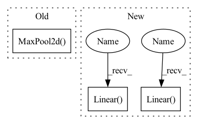

Pattern ID :921

Before Change
def __init__(self, number_class_symbols, in_channels=3, rnn_size=128):
super().__init__()
self.maxpooling_22 = nn.MaxPool2d(2, 2)
self.maxpooling_21 = nn.MaxPool2d((2, 2), (2, 1), (0, 1))
self.layer1 = self._make_layer(in_channels, 64, 3, 1, 1)
self.layer2 = self._make_layer(64, 128, 3, 1, 1)
self.layer3 = self._make_layer(128, 256, 3, 1, 1)
self.layer4 = self._make_layer(256, 256, 3, 1, 1)
After Change
(time_feature_count, time_feature_count))
self.bilstm = BiLSTM(time_feature_count, lstm_hidden, lstm_len)
self.classifier = nn.Sequential(
nn.Linear(lstm_hidden * 2, time_feature_count),
nn.GELU(),
nn.Dropout(0.1),
nn.Linear(time_feature_count, number_class_symbols)
)
def forward(self, x):
x = self.feature_extractor(x)
In pattern: SUPERPATTERN
Frequency: 3
Non-data size: 3
Instances
Fragment ID: 3091855
Project Name: ai-forever/ocr-model
Commit Name: db55ee227e236d8da2dc2323804c42dd7f6b14b4
Time: 2021-09-28
Author: kalinin@sent.com
File Name: ocr/src/models.py
M Class Name: CRNN
N Class Name: CRNN
M Method Name: __init__(5)
N Method Name: __init__(4)
M Parent Class: nn.Module
N Parent Class: nn.Module
M File Name: ocr/src/models.py
N File Name: ocr/src/models.py
M Start Line: 23
M End Line: 32
N Start Line: 28
N End Line: 40
'>
Before Change
def __init__(self, number_class_symbols, in_channels=3, rnn_size=128):
super().__init__()
self.maxpooling_22 = nn.MaxPool2d(2, 2)
self.maxpooling_21 = nn.MaxPool2d((2, 2), (2, 1), (0, 1))
self.layer1 = self._make_layer(in_channels, 64, 3, 1, 1)
self.layer2 = self._make_layer(64, 128, 3, 1, 1)
self.layer3 = self._make_layer(128, 256, 3, 1, 1)
self.layer4 = self._make_layer(256, 256, 3, 1, 1)
After Change
(time_feature_count, time_feature_count))
self.bilstm = BiLSTM(time_feature_count, lstm_hidden, lstm_len)
self.classifier = nn.Sequential(
nn.Linear(lstm_hidden * 2, time_feature_count),
nn.GELU(),
nn.Dropout(0.1),
nn.Linear(time_feature_count, number_class_symbols)
)
def forward(self, x):
x = self.feature_extractor(x)
'>
Fragment ID: 3091871
Project Name: sberbank-ai/ocr-model
Commit Name: db55ee227e236d8da2dc2323804c42dd7f6b14b4
Time: 2021-09-28
Author: kalinin@sent.com
File Name: ocr/src/models.py
M Class Name: CRNN
N Class Name: CRNN
M Method Name: __init__(5)
N Method Name: __init__(4)
M Parent Class: nn.Module
N Parent Class: nn.Module
M File Name: ocr/src/models.py
N File Name: ocr/src/models.py
M Start Line: 23
M End Line: 32
N Start Line: 28
N End Line: 40
'>
Before Change
stride=1,
),
nn.ReLU(),
nn.MaxPool2d(kernel_size=2),
)
//
self.conv2 = nn.Sequential(
After Change
nn.MaxPool2d(kernel_size=2),
)
self.fc1 = nn.Linear(3 * 3 * 64, 64)
self.fc2 = nn.Linear(64, 10)
self.out = nn.Linear(10, 2)
def forward(self, x):
x = self.conv1(x)
x = self.conv2(x)
'>
Fragment ID: 3091868
Project Name: ki-ljl/cnn-dogs-vs-cats
Commit Name: 8377a6a38f25ba56195c2396838201aa05b2f5cd
Time: 2022-03-26
Author: lijunliang.ki@gmail.com
File Name: CNN.py
M Class Name: cnn
N Class Name: cnn
M Method Name: __init__(1)
N Method Name: __init__(1)
M Parent Class: nn.Module
N Parent Class: nn.Module
M File Name: CNN.py
N File Name: CNN.py
M Start Line: 20
M End Line: 62
N Start Line: 35
N End Line: 74